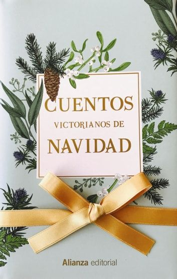

Diciembre
El extenso periodo victoriano fue, por diversas y variadas circunstancias, quien dio carta de naturaleza al "espíritu navideño" y consolidó buena parte de la imagen y el carácter que asociamos a estas festividades hoy en día. Fue, asimismo, la edad de oro del cuento de Navidad, del que dejaron muestras los más destacados autores de la época, siendo los de miedo y los de misterio los que gozaron de más aceptación. En esta recopilación antológica no falta, como es natural, Charles Dickens, y junto a los suyos se recogen también magníficos relatos de Anthony Trollope, Charlotte Riddell, Arthur Conan Doyle (uno de ellos protagonizado por Sherlock Holmes), Juliana Ewing y Wilkie Collins.